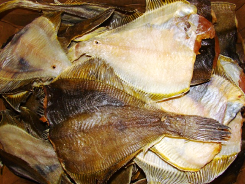

Продукция РК им.Котовского
(Цены на продукцию действуют с 01 января 2018 года)
Камбала

Камбала сушёно-вяленая весовая
Цена: 490 руб./кг.
(Цены на продукцию действуют с 01 января 2018 года)
Камбала сушёно-вяленая весовая
Цена: 490 руб./кг.
Камбала - это рыба семейства камбалообразных. Благодаря богатому разнообразию и биологической гибкости плоские рыбы успешно акклиматизировались вдоль всего побережья Евразии и во внутренних морях. Камбала прекрасно себя чувствует в условиях Черного, Азовского, Каспийского и Средиземного морей, в умеренном климате Балтики, Северного и Норвежского морей. Многие виды приспособились к малосоленой и даже пресной воде рек, имеющих выход на побережье. Но особенно богаты камбаловой рыбой холодные окраинные участки Тихого и Северного Ледовитого океанов – Карское, Чукотское, Японское, Берингово, Охотское, Баренцево моря. Камбалы ведут одиночный донный образ жизни, искусственно маскируясь под цвет окружающего ландшафт (мимикрия). Большую часть времени рыба проводит лежа на поверхности грунта или зарывшись по глаза в донные отложения. Такой природный камуфляж очень рационален и одновременно решает две задачи выживания – поймать добычу из засады и не быть съеденным более крупными хищниками.
Дальневосточная камбала - собирательное название десятка таксонов плоских рыб. Кроме желтоперой, звездчатой и белобрюхой форм, существуют ещё и двухлинейный, длиннорылый, хоботный, палтусовидный, желтобрюхий, бородавчатый и другие виды. Именно северные территории обеспечивают большую часть мирового улова камбалообразных.
В зависимости от разновидности таксона кормовая активность может происходить в сумерках, ночью или в светлое время. Рацион состоит из пищи животного происхождения. Молодь камбалы питается бентосом, червяками, бокоплавами, личинками, рачками, икрой. Взрослые особи кормятся офиурами и другими иглокожими, мелкой рыбой, беспозвоночными животными, ракообразными, червями. Особенно неравнодушна камбала к креветкам и мойве. Боковое расположение головы хорошо подходит для выгрызания из грунта моллюсков, которые живут в толще дна, оставляя на поверхности дыхательные сифоны. Сила зубастых челюстей настолько велика, что рыба легко справляется с толстостенными раковинами кардиид (сердцевиков) и панцирями крабов. Сбалансированное питание высокобелковой пищей и определяет высокую ценность камбалы.
Неоценимое достоинство камбалы – полезные вещества, нужные организму: легко усвояемые белки (15 г); тиамин (0,14 мг), рибофлавин (0,15 мг), пиридоксин (0,12 мг); витамины В12 (1,2 мкг), В9 (6 мкг), D (2,8 мгк), С (1 мкг); калий (320 мг), кальций (45 мг), фосфор (180 мг), йод (50 мкг); медь (110 мкг), фтор (430 мкг), сера (190 мг).
Рыба обладает упругой, нежной текстурой и сладковатым вкусом. Из-за особенностей формы при разделке получается не пара, а 4 филейных части. Пищевая ценность камбалы составляет 90 ккал на 100 г. Благодаря невысокой калорийности и аспарагиновой и глутаминовой кислотам мясо плоских рыб – составляющая оздоровительных и реабилитационных диет.
Благодаря гастрономическим характеристикам и свойствам мясо камбалы считается деликатесом и средством для регулирования метаболизма и веса, снижения в крови уровня «плохого» холестерина, повышения работоспособности и иммунитета, стимуляции регенерационных процессов в мышцах, коже, волосах.
Рыба отлично поддается паровой обработке, отвариванию, вялению, жарке, копчению, готовке в кляре, запеканию в духовке и на гриле. Но лучше применять щадящие способы, чтобы длительным термическим воздействием не разрушить витамины и насыщенность вкуса. Блюда на пару полезны для детей, беременных, людей с проблемами желудочно-кишечного тракта и обмена веществ. Превосходными гастрономическими качествами обладает икра камбалы. Она содержит большое количество белков (более 20%) и является ценным источником протеина, сохраняя невысокую калорийность продукта (80 ккал на 100 г). Популярные способы приготовления икры – засолка и жарка.
Но не стоит воспринимать глобальную пользу рыбы камбалы для организма как факт. Существуют противопоказания, которые нужно учитывать прежде, чем употреблять в пищу морепродукт: индивидуальная непереносимость; возраст ребенка до 1 года; заболевания печени и выделительной системы из-за повышения нагрузки на почки и желчный пузырь. Особенно эти требования касаются соленой рыбы, которая задерживает жидкость в организме и провоцирует отеки. Нужно аккуратно употреблять копченые блюда, способные негативно изменять структуру материнского молока и давать осложнения на сердечно-сосудистую систему.
Выбирая камбалу необходимо помнить о некоторых особенностях. Брюшко у качественной камбалы должно быть однородного окраса, без вздутых участков и достаточно плоское. Жабры у тушки не должны быть ярко-красные. Кожа не должна иметь деформаций. При надавливании на тушку, тело не должно продавливаться, не должно быть рыхлым. Рыбный аромат не должен содержать запаха аммиака. Рыбная кожа должна прилегать к мякоти. Если камбала покупается в упаковке, то отдельно надо посмотреть срок годности. Рыбу во вскрытых упаковках брать запрещено. Несмотря на то, что внешне она может быть красивой и вкусно пахнуть, продуктом можно отравиться. Замороженная камбала также должна быть однородного окраса, глаза ее должны быть яркими.